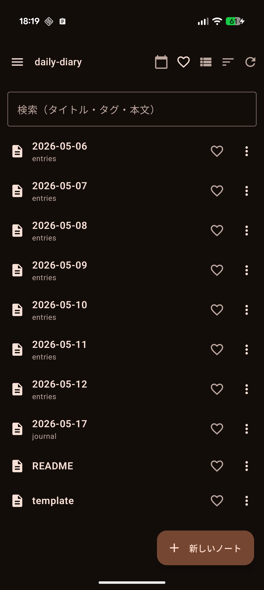
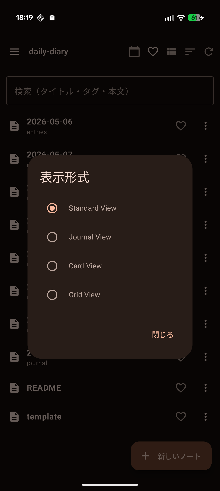
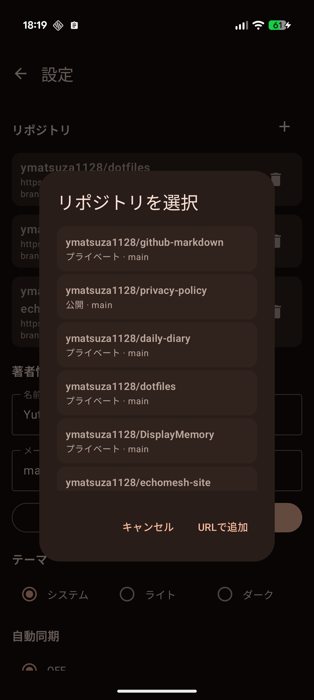
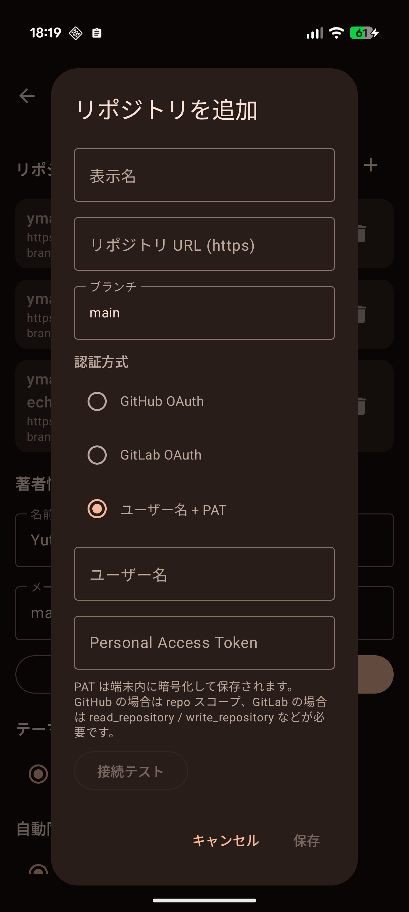

Your notes. Your repo. Your rules.
A Markdown notes app for Android. Notes live as plain .md files in
your Git repository — or Google Drive, Dropbox, Box, or just your filesystem.
No vendor lock-in. No cloud you don’t control.
Your notes are .md files on disk. Open them with any editor, any time, on any device. No proprietary format. No export step.
Clone any GitHub, GitLab, Codeberg, Bitbucket, Gitea, or self-hosted repo. Commit, push, pull. Full version history because that’s just how Git works.
Don’t want Git? Pick Google Drive, Dropbox, Box, or local-only. Same notes, your choice of sync.
[[Page]] links work natively. Tap to navigate. Missing pages get auto-created. Backlinks panel shows what references the current note.
Bring your own key for Gemini, OpenAI, or Anthropic. Stay 100% offline if you don’t. Your key is encrypted on-device.
One tap opens journal/YYYY-MM-DD.md. Append from any app via the Android share sheet. Daily notes without ceremony.




gemini-2.5-flashgpt-4o-miniclaude-haiku-4-5Keys are stored with Android EncryptedSharedPreferences (Keystore-backed). Disable AI entirely if you prefer — the app works without any provider configured.
GitMD is in closed testing on Google Play. Email ymatsuza.tech@gmail.com to request tester access.
A desktop version (Linux / macOS / Windows) is in development.
Your notes never leave your storage backend (Git remote / Drive / device). Tokens are encrypted on-device. Anonymous usage events are sent to Firebase Analytics (no PII, no advertising ID). No accounts, no profile linking.
Full text: Privacy Policy.
GitMD は、Android 用の Markdown ノートアプリです。あなたのノートは .md ファイルとして、あなたが選んだ場所（Git リポジトリ、Google Drive、Dropbox、Box、または端末ローカル）に保存されます。